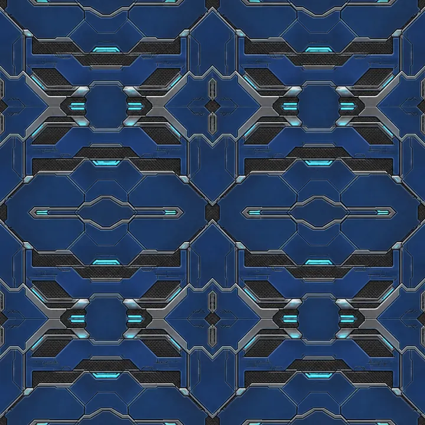

Tre comportamenti degli ostacoli
Cancelli fissi, cancelli che compaiono a fase dopo un'anteprima e cancelli mobili che spazzano, scorrono o si invertono. Gli spazi si restringono con la distanza.
Vola nel tunnel. Trova lo spazio.
Un volo infinito attraverso un tunnel alieno. Evita il muro, passa nella fessura di ogni cancello e raccogli cristalli per caricare lo scudo.
Il progetto Unity ha un ciclo di gioco completo, un hangar e schermate delle impostazioni; non c'è ancora una build pubblica.
Trascina per muoverti nell'interno del tunnel. Su desktop usa A e D o i tasti freccia.
Ogni cancello lascia uno spazio. Ostacoli fissi, a fase e in movimento compaiono man mano che la corsa avanza, e gli spazi si restringono con la distanza.
I cristalli aggiungono punteggio e combo e caricano uno scudo che alzi con un doppio tocco. La partita finisce a una collisione, e il tuo miglior punteggio viene conservato.
Cancelli fissi, cancelli che compaiono a fase dopo un'anteprima e cancelli mobili che spazzano, scorrono o si invertono. Gli spazi si restringono con la distanza.
Raccogliere cristalli carica uno scudo. Un doppio tocco lo alza.
Il punteggio viene dalla distanza, dai cristalli, dai cancelli superati e dai passaggi ravvicinati, con un moltiplicatore di combo.
Il tunnel cambia tema durante il viaggio: condotto criogenico, vene biomeccaniche, nucleo del reattore e fenditura del vuoto.
Quattro scafi estetici, acquistabili con lo Xeno raccolto nelle corse. Non danno vantaggi di gameplay.
Suono, musica adattiva, vibrazione e movimento ridotto si possono attivare o disattivare singolarmente. I progressi sono salvati sul dispositivo.
Non c'è ancora una data di uscita. Questi sono obiettivi del progetto, non promesse.
Texture dei materiali dal progetto. Non sono screenshot di gameplay.



Un volo infinito nel tunnel per telefoni. Governi all'interno di un tunnel alieno, passi nella fessura di ogni cancello di ostacoli e raccogli cristalli per punteggio e scudo. Il BlastBlast! e Vacuum Shot sono infiniti anche loro, ma si muovono col rinculo; qui guidi tu.
Non ancora. Alien Flying è un prototipo iniziale senza build pubblica e senza data di uscita. Android e iOS sono le piattaforme previste.
Alien Flying è realizzato da WillowinWorlds, uno studio indipendente di giochi mobile (vedi il suo giochi principali). Segui WillowinWorlds sui social collegati da questa pagina, oppure scrivi a willowinworlds@gmail.com per chiedere aggiornamenti su Alien Flying.
Il voto si aprirà sui canali dello studio. Segui WillowinWorlds per prendere parte.